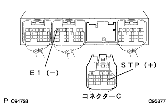

電子制御式オートマチツクトランスアクスル［ECT］システム（U441E） ストップランプスイッチ回路 |
| 手順1 | ストップランプ点灯点検 |
ブレーキペダルを踏んだときストップランプが点灯し、ブレーキペダルを離したとき消灯することを確認する。
|
| ||||
| OK | |
| 手順2 | TaSCANデータ読み取り（ストツプランプSW） |
TaSCANを使用して、画面表示に従って操作を行い、[ECUデータモニター]画面を表示させコンピュータデータを点検する。
| 項目名[記号] | 項目解説 | 点検条件 | 参考値 | 異常時の点検項目 |
|---|---|---|---|---|
| ストップランプSW[STP] | ブレーキペダル踏込み中を表す | ブレーキペダル離す→踏む | OFF→ON | ストップランプスイッチ信号 |
|
| ||||
| NG | |
| 手順3 | ワイヤハーネスおよびコネクター点検（ストツプランプスイツチASSY-エンジンコントロールコンピユータ） |
エンジンコントロールコンピユータのコネクタCを切り離す。
|  |
イグニツシヨンスイツチをONにし、トヨタエレクトリカルテスターを使用して、C19(STP)←→B7(E1)端子間の電圧を点検する。
(端子配列は参照)
| ストップランプスイッチ | 電圧[V] |
|---|---|
| OFF(ブレーキペダルを離した状態) | 0-1.5 |
| ON(ブレーキペダルを踏んだ状態) | 7.5-14 |
|
| ||||
| OK | ||
| ||